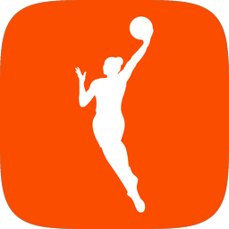
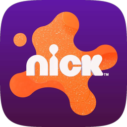
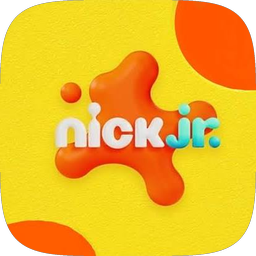
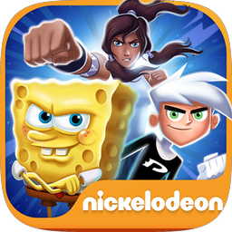

I see around corners. Then I bring everyone else along.
Senior Technical PM · NBA · Tubi · Nickelodeon
NBA / WNBA · 2025–Present
Building the WNBA's streaming home, from scratch
The WNBA's CTV app ran on a third-party platform that capped control over the fan experience and the roadmap. I led the team that rebuilt it in-house before the 2026 season.
100K+fans watching concurrently on opening night
Platform ArchitectureCTVIdentity & Entitlements

Tubi · 2023–2024
The bottleneck hiding in plain sight on Fire TV
A technical constraint in how Tubi ingested channels was quietly capping revenue and discoverability. Fixing it meant rethinking the distribution strategy and convincing Amazon to come along.
+20%traffic and revenue growth on Fire TV Live Tab
DistributionPartner IntegrationGrowth
Tubi · 2023
Launching on Vision Pro when no one wanted to own it
Mid-crunch. New platform. Major partner commitment on the line. No clear owner. I stepped in, drove alignment across design and engineering, and shipped on time, with Apple's editorial backing to prove it.
$150K+in additional Apple editorial support earned at launch
New Platform LaunchPartner ManagementExecution
Nickelodeon / Paramount · 2016–2023
Relaunching a Nick app when no one else knew what to do
Video, games, and discovery had become three separate products living inside one app. I unified them into a platform kids actually wanted to spend time in.
+18%engagement · 5.5M new monthly minutes · $125K–$250K new ad revenue
UX StrategyKids PlatformEngagement


Nickelodeon / Paramount · 2016–2023
Proving a $5M game had an audience before it launched
Leadership doubted there was demand for Super Brawl Universe, Nick's biggest cross-IP kids' mobile game. I used data, pre-registration, and platform partnerships to de-risk the launch.
1.5Mpre-registrations
630Kfirst-week installs
Launch StrategyPlatform PartnershipsASO

The setup
The WNBA's connected TV app ran on a third-party vendor's platform. That capped the league's control over the fan experience, the roadmap, and monetization, right as audience and ad demand were both growing fast.
What I did
I led the rebuild: 9 teams across engineering, ads, identity, analytics, feeds, design, legal, and marketing, with a deadline tied to the start of the season. I started with a teardown of the existing WNBA and NBA apps to map the fan journey and define what the new platform actually needed: onboarding, navigation, live and VOD playback, in-app purchases, stats. From there I split the rebuild into 3 MVP phases with cross-team demos after each, so we could catch problems before they compounded.
Midway through planning, leadership pushed hard for Multiview at launch since it had worked well on the NBA app. I held it back. The WNBA has far fewer concurrent games than the NBA, so the payoff was unproven, and pulling engineers off resume watching (which fans rely on every time they jump back into a live game) would have put core playback at risk for a feature with no validated demand. Multiview moved to post-launch, pending real usage data.
Where it landed
100K+ concurrent fans on opening night
Estimated 3.1M ad impressions and $80K to $100K in ad revenue on day one
Full in-house control of the tech, the roadmap, and monetization
The same architecture can support launches for other leagues and teams
"Matt hit the ground running immediately and worked to develop dynamic relationships across the organization... As a result, the application was delivered on-time and exceeded expectations across the board."Kyle Magee, Digital Product Leader, NBA
The setup
Tubi's Fire TV Live Tab traffic was dropping fast, on a platform reaching millions of CTV users where Amazon's Live Tab had become a major discovery surface for us.
What I did
I worked with Data Science, Engineering, and Amazon's Live platform team to trace the full path from discovery to tune-in. We ruled out a recent update from our news team early on. Amazon's manual channel ingestion was capping us at around 50 channels, leaving many of our best-performing feeds invisible on the Live Tab. Engineering confirmed it wasn't a bug: our reliance on non-Gracenote IDs meant we couldn't scale ingestion on Amazon's system at all.
The fix meant trading a high-performing channel that didn't have a Gracenote ID for triple the overall channel coverage. I made that call: a short-term loss for long-term scale and credibility with Amazon. It got fast buy-in across Content, Live Ops, and Amazon itself.
When Amazon needed extra backend work to support channel-order testing, I prioritized speed to catch an upcoming traffic window and pushed ordering optimization to a second phase. We launched in a single push, since the platform didn't support a staged rollout, and managed risk with frequent updates instead.
Where it landed
+20% traffic and ad revenue lift within days
Tripled the overall channel catalog
Amazon cited the update as a model response to platform feedback
Strengthened the case for continued investment in Live
"Whether it was engaging with stakeholders, negotiating priorities, or providing updates to leadership, he did so with confidence and clarity."Ben Clissen, Senior Technical Project Manager, Nickelodeon
The setup
My boss had been leading our push to launch on Apple Vision Pro. The day leadership finally approved it, she was on vacation, which left a real leadership gap right as the clock started on a deadline tied to hundreds of thousands of dollars in current and future Apple editorial promotions.
What I did
I stepped in immediately. I reviewed the existing documentation and go-to-market plan, then met with engineering, marketing, product leadership, legal, and content, including late-night syncs with engineers in Beijing, to check our workstreams against Apple's expectations. Three gaps came up: our launch plan hadn't matched Apple's positioning for Vision Pro, milestone ownership was unclear, and a couple of deliverables tied to editorial exposure were at risk of getting missed.
Some people questioned whether we should keep moving without my boss in the loop. I addressed it directly, told the team I had her confidence, and we kept moving. I rebuilt the go-to-market plan with Marketing around Apple's editorial and technical priorities, built a workback schedule that made ownership clear, and ran weekly cross-functional syncs to keep deliverables on track.
One open question was the storefront art: match our existing platform style, or lead with Vision Pro's AR features. I'd already helped Design clear lower-priority work off their plate so they had room to build both versions, and we ran an A/B test at launch rather than picking based on opinion. The AR-focused design won.
Where it landed
Launched on time, meeting our commitment to Apple
$150K+ in new editorial promotional value from Apple
Strengthened the partnership and opened the door to future high-visibility placements
Vision Pro itself had a limited user base, as expected; the promotions still drove a noticeable lift in downloads elsewhere
"He never shied away from a challenge, happily stepping up to lead when there was a vacuum, like shepherding the Vision Pro launch across the finish line."David Golan, Senior Product Manager, Tubi
The setup
I joined Nickelodeon right after Nick and Nick Jr. migrated onto Paramount's shared streaming platform. The migration standardized backend services across brands like MTV and Comedy Central, but it also stripped out the kid-first experience that set our apps apart: games, search, and simple navigation got replaced with text-heavy interfaces young kids couldn't use. Engagement and app store ratings both dropped, and the apps went into maintenance mode with no recovery plan.
What I did
I compared pre- and post-migration engagement data with the analytics team, then ran app store review analysis, support ticket review, and usability sessions with kids. Three things stood out: removing games directly correlated with shorter sessions and higher drop-off, the new text-heavy navigation created real friction for non-readers, and the migration had also quietly built a backend that could support faster delivery later if I used it right.
Leadership pushed back on my initial recovery plan over complexity and cost. I repositioned the apps as the entry point into Paramount's streaming ecosystem: the place families landed before they were ready to pay for Paramount+ or Noggin. That got buy-in from product leadership, engineering, QA, web, legal, backend, and design.
The plan called for restoring native mobile games, but rebuilding the legacy games for the new codebase would have taken far more engineering time for limited long-term value. I chose HTML5 web games delivered through a custom mobile wrapper: it shipped faster and gave us something reusable for future projects.
I led 12 engineers across iOS and Android, plus QA, web, backend, and design partners, over about a year for the first two phases. The web team was the biggest dependency for the games wrapper, so I built that relationship early, before any risk showed up. It paid off: when delivery started slipping, I found the cause was resourcing on the web side. So I had my own engineers pick up some of the wrapper work to keep the timeline intact.
Where it landed
+18% engagement time: 5.5M additional minutes per month, from around 30M to over 36M
App store ratings recovered above 4 stars
$125K to $250K in new annual ad revenue
Repositioned the apps from maintenance mode to a strategic part of Paramount's ecosystem
"What sets Matt apart is his deep technical expertise. He understands the intricacies of engineering and knows how to communicate them to non-technical stakeholders. That blend of technical knowledge and communication lets him connect product and engineering, and makes sure everyone on the team is working toward the same goal."Adrian Cireasa, Project Manager, Nickelodeon
The setup
I was in Product Management and Partnerships at Nickelodeon, leading cross-functional development and product strategy for Super Brawl Universe, a cross-IP mobile brawler that brought SpongeBob, TMNT, and other Nick favorites into one game. It was Nickelodeon's first large-scale kids' mobile launch in years, a $5M+ development and marketing investment. As launch got closer, leadership started to question whether there was enough demand to justify the marketing spend. We were too far in to pull the plug, but not too late to scale back. If the game underperformed, it could set back future mobile investment for years.
What I did
I benchmarked competing action and brawler titles in App Annie for downloads, retention, and monetization, shared beta builds with Google, Apple, and Amazon to gauge positioning, and tested early concepts with kids. Three things stood out: brawlers that paired recognizable characters with accessible gameplay held 2–3x the retention of typical casual games, featuring in the app stores decided which games in this category lived or died, and the characters we put in our store art changed conversion.
So I built the plan around validation, visibility, and conversion: a pre-registration campaign with a Day 1 reward to prove demand early, a platform partnership plan where I pitched Google, Apple, and Amazon and negotiated featuring windows, and icon A/B tests to find the character mix that converted best. Some stakeholders questioned pre-registration, so I brought data from recent competitor pre-reg successes and showed how little effort it would take on our side. That got marketing, leadership, and our external dev partner aligned.
The icon tests produced the hardest call. My instinct favored TMNT and Patrick Star, but SpongeBob, Danny Phantom, and Korra converted higher. I switched right away. During beta I gave the dev team structured feedback on the first-time experience, chest flows, and tutorial bugs so kids would stick around. By launch day, user acquisition ($150K in month one), platform featuring, and marketing (Nick TV, YouTube trailers, a Times Square billboard) all landed together.
Where it landed
1.5M pre-registrations, turning into about 630K first-week installs (~42% conversion)
Featured by Google Play, the App Store, and Amazon, and later showcased at Google I/O as a pre-registration success story
Pre-registered players retained about 20% better than organic users: ~45% D1, 20–24% D7, 7–9% D30, above 2019 benchmarks for kids' action titles
Nickelodeon's largest mobile launch in years, which restored leadership's confidence to fund future cross-IP big swings
"His ability to clearly articulate the product vision was instrumental in aligning our team."Ben Clissen, Senior Technical PM, Paramount Global
Building
Problems I solved anyway
Agent
Jira Story Generator
Reads Figma files and writes structured Jira stories.
"Matt was brought in to lead a project just a few weeks after it had gotten underway. This project aimed to replace a mature product already in production; had a tight, immovable deadline; and would require someone who could balance the needs of a diverse set of stakeholders and fans alike.
Matt hit the ground running immediately and worked to develop dynamic relationships across the organization. Those relationships allowed him to lead a multi-faceted team that was confident in his guidance, while he ensured direction was clear and collaborative. As a result, the application was delivered on-time and exceeded expectations across the board.
Matt did an especially excellent job of appropriately identifying when to make a decision or take on a problem himself versus when it was important to escalate to his manager and other senior leads. It made my job easier knowing Matt was on top of things and required very little direction while still ensuring I was in the loop when necessary.
I really enjoyed working with and learning from Matt, and I hope to have an opportunity to work with him again in the future. I would absolutely hire Matt again if given the opportunity."
Kyle MageeDigital Product Leader, NBA · managed Matt directly
"I had the pleasure of working closely with Matt, and I can confidently say that he is one of the most exceptional product managers I've encountered. His ability to navigate the complexities of product development while maintaining a clear focus on the user and business goals is truly remarkable. Beyond his technical prowess, Matt's leadership style fosters trust and collaboration."
Adrian CireasaProject Manager, Nickelodeon
"At Tubi, he demonstrated his ability to drive significant results with key partners like Amazon and Apple. He never shied away from a challenge, happily stepping up to lead when there was a vacuum, like shepherding the Vision Pro launch across the finish line."
David GolanSenior Product Manager, Tubi
"His ability to clearly articulate the product vision was instrumental in aligning our team. Whether engaging with stakeholders, negotiating priorities, or updating leadership, he did so with confidence and clarity."
Ben ClissenSenior Technical PM, Paramount Global
"As a designer, I relied on information that would help develop better designs and Matthew was a pivotal point of contact for all creative needs. His communication and collaborative efforts really refined our design process."
Rebecca LavalProduct Design, Tubi
"Matthew led experiments to improve conversion metrics on our various app stores, leading ideation and pressure-testing creative theories. As Tubi expands globally, we have Matthew to thank for laying the foundation of our App Store efforts."
Dan BowmanProduct Growth, Tubi
"Matt created very clear and well-documented tickets. He was ready to jump on a call any time we had misunderstandings and had a very positive attitude. He will bring a lot of value through his vast experience, knowledge, kindness, and patience."